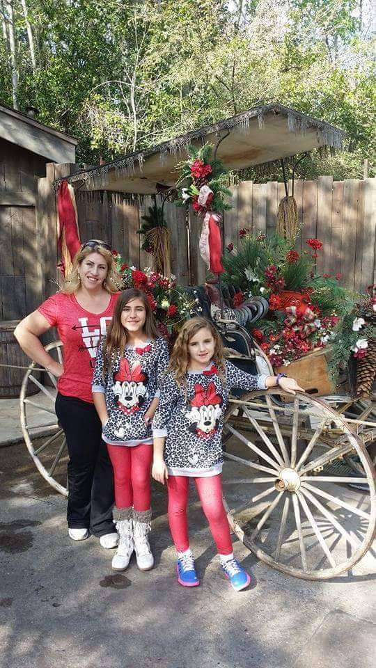

Tami Chritclow is a hard working, God loving woman. Christ Centered Coaches is her vision and her
joy. She has tirelessly worked to get it into motion goign through hoops, to fall in valleys. Due to
all that has lead up to the full operation of this site, being able to have it open, available, and
presented to you today is a victory like no other. Hopefully you enjoy this and find as much peace
in it as is intended. "Peace I leave with you, my peace I give unto you: not as the world giveth
five I unto you."(New Testament, John 14:27)

This site allows for direct lines to honest and trustworthy coaching. With Christ at the center, it
adds a spirit that can not be found in any other coachung. This allows for calm and piece to come
intot the sessions and the lives of both the patient and the coach.